Log
Ten seconds after you stop your watch
Enter the distance and one of time, pace or speed. spur works out the other two. No GPS, no syncing, no account: it works with any watch, or none.
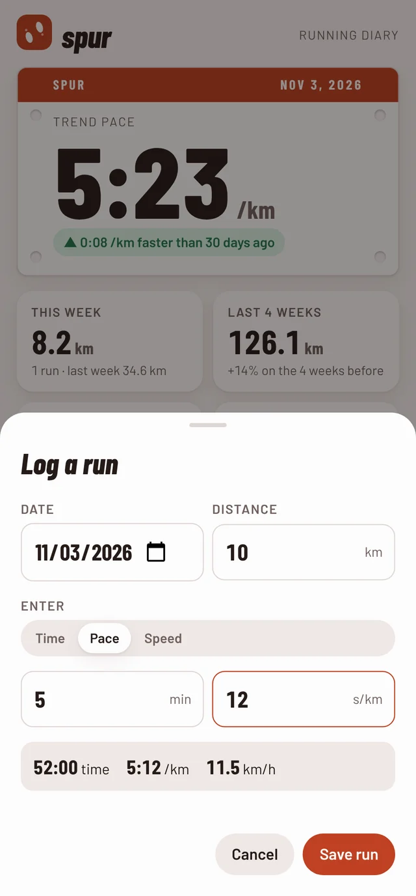
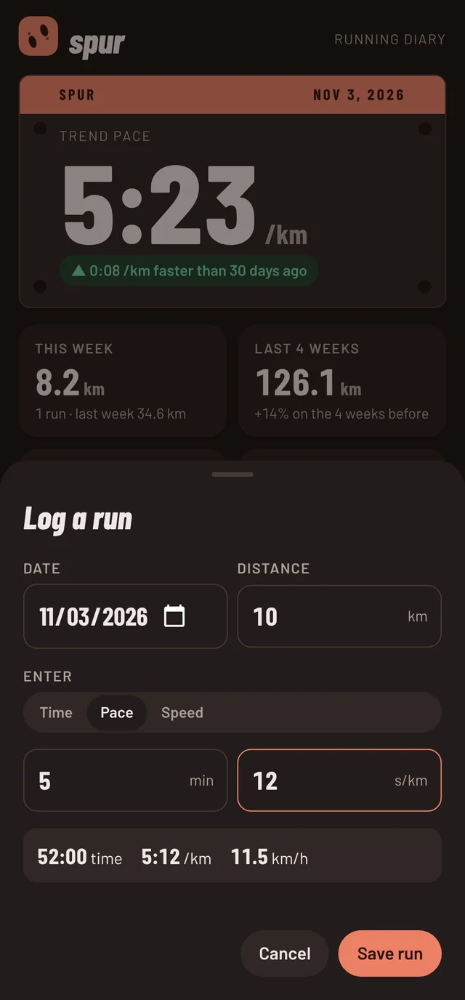
Log the distance and time after each run. spur smooths out the good days and the bad days and shows your real pace trend, with nobody else looking.
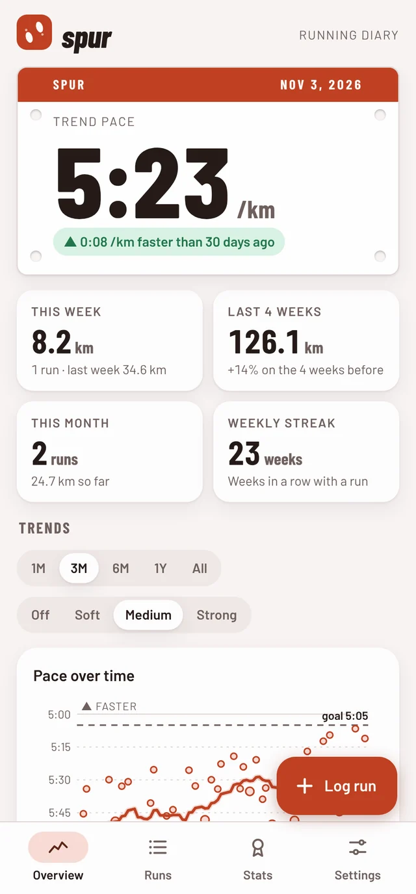
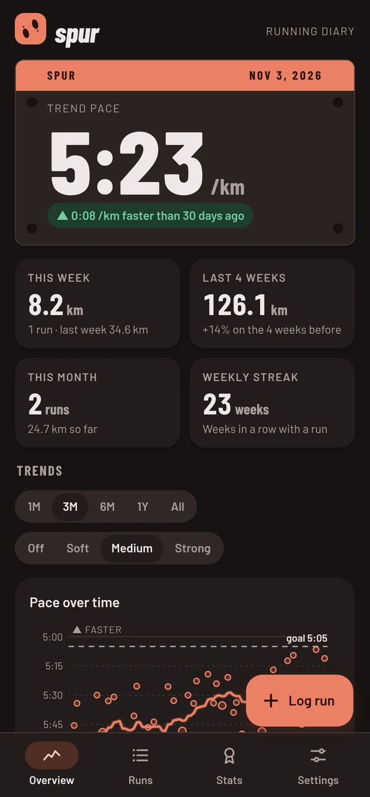
Single runs are noisy: hills, heat, a bad night's sleep. spur looks past them to the trend, the way a good coach would.
Enter the distance and one of time, pace or speed. spur works out the other two. No GPS, no syncing, no account: it works with any watch, or none.


Each run is a dot, and the line through them shows your real form, so one hard day doesn't wreck the picture and one great day doesn't fool you. Beside it, your weekly distance or running time, with its own trend line.
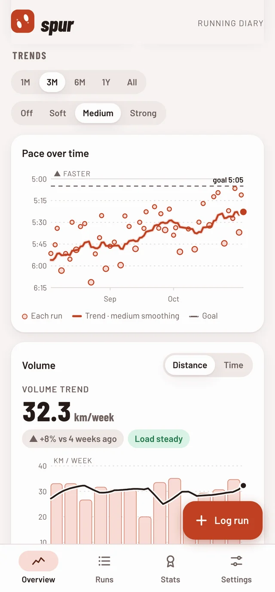
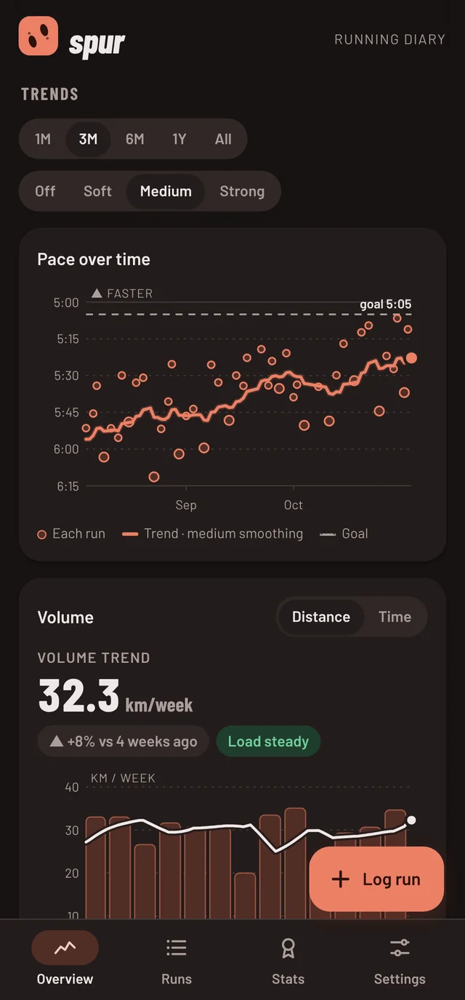
5K to marathon estimates from your strongest recent effort, using Riegel's formula. Totals, weekly streaks, your longest run, and milestones from your first 5K to sub-five pace.
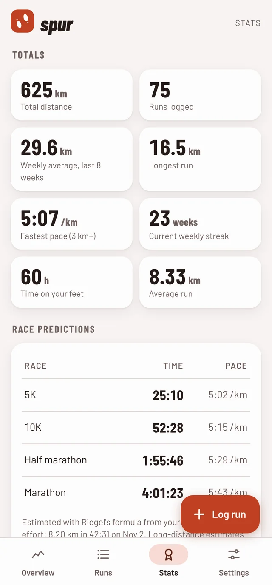
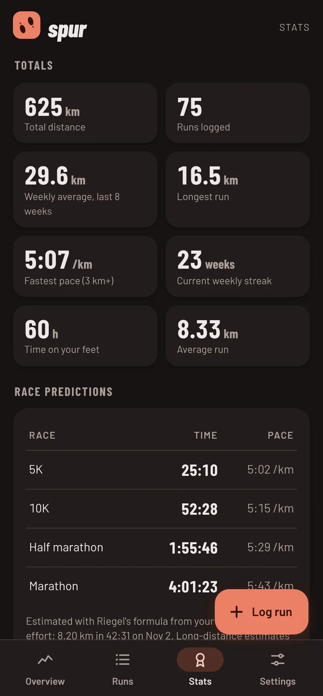
Tap any run to fix it. Kilometres or miles, pace or speed, light and dark, four themes named after where people run. Export everything as a plain CSV whenever you like.
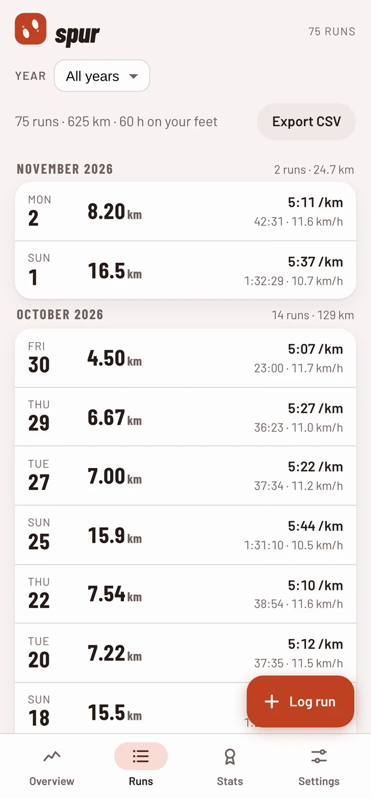
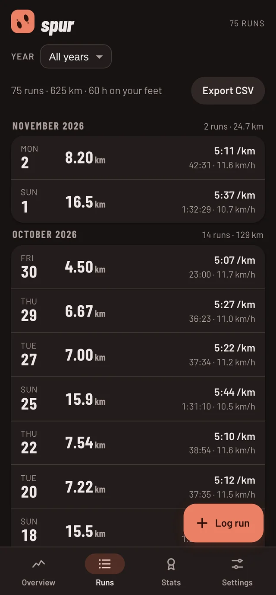
The self-hosted web app spreads out on a laptop or desktop: pace and volume trends side by side, this week, your goal and recent runs at a glance, with a full sortable run table one click away.
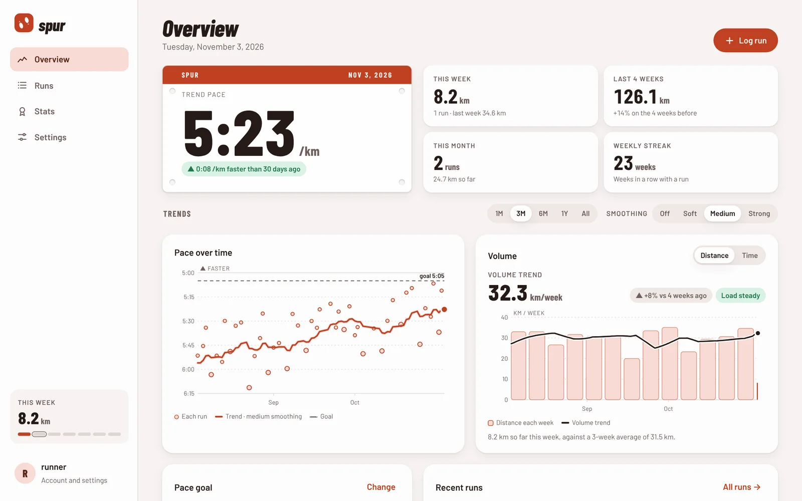
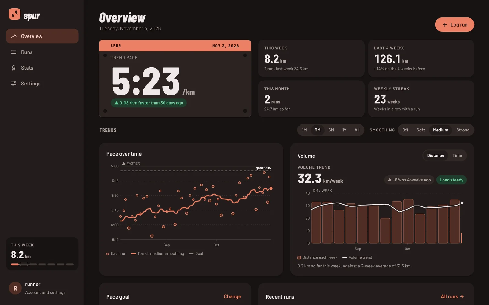
Every devicePhone, tablet or desktop: the layout adapts, and phones can install it like an app.
Everyone at homeTurn on sign-ups and each person gets a private diary on the same server.
One file to back upAll runs live in a single database file, with a backup command built in.
Most running apps are built to collect data. spur is built to keep it. Here is the full result sheet.
| Check | Android app | Self-hosted web app |
|---|---|---|
| 1Permissions | None | None |
| 2Internet access | None at all | Only to your own server |
| 3Account | Not needed | On your server, created by you |
| 4Ads, analytics, trackers | None | None |
| 5Where your runs live | On your phone | In one database file you own |
| 6Source code | Open, under the GNU GPL v3 or later | |
Both use the same CSV format, so your runs can move between them.
A native app with no permissions and no internet access. Everything stays on your phone.
For Android 7.0 and newer. Open the file on your phone and allow your browser to install it, or add spur to Obtainium to be told about new versions.
Runs in Docker on a home server, NAS or Raspberry Pi. Open it in any browser, or install it on your phone's home screen.
# in the spur source folder cd selfhost docker compose up -d # then open http://your-server:4219
No third-party packages: just Node.js and its built-in SQLite. Add HTTPS with the included Caddy setup.
spur has no paid tier, no ads and no data to sell. If it helps your running, a coffee helps keep it going.
No, on purpose. You type in the distance and time after each run, from your watch or a map. That means no location data ever exists for spur to leak, and it works with any watch or none.
Each day's pace trend is a weighted average of your runs over the previous weeks, with recent runs counting most (a one-sided Gaussian). The volume trend does the same to your rolling 7-day total, so it isn't thrown by which days you run. Both only look backwards, so today's numbers never depend on runs you haven't done yet. The goal forecast extends your last six weeks of trend in a straight line.
Yes. Soft follows changes within days, medium within a couple of weeks, and strong shows the longer direction. Off shows your runs and weekly totals exactly as they are.
Yes. Both export and import the same simple CSV: date, distance in km, time. Spreadsheets can open it too.
Any machine that runs Docker with Compose: a home server, a NAS, a Raspberry Pi or a small cloud server. To install it on your phone like an app you'll want HTTPS, which the included Caddy setup gives you with a free certificate.
Yes. Turn on sign-ups and each person gets their own account. Nobody can see anyone else's runs.
It's German for track: a diary of the tracks you leave.